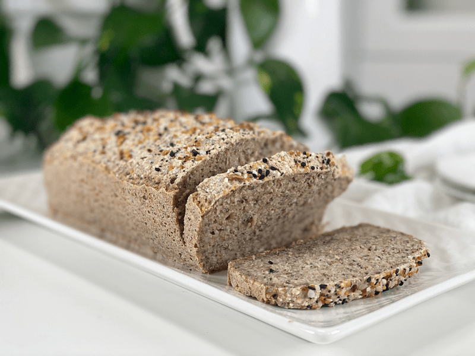
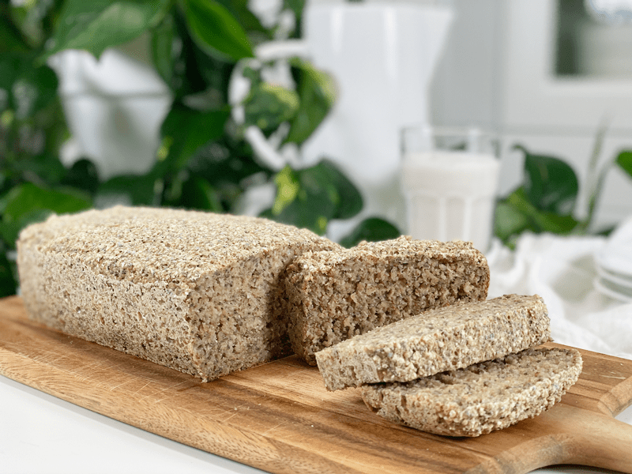
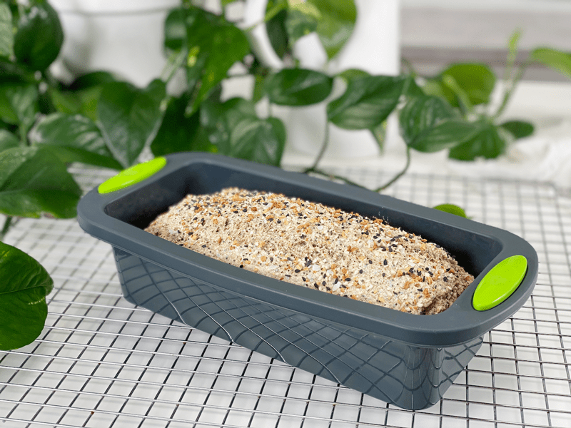
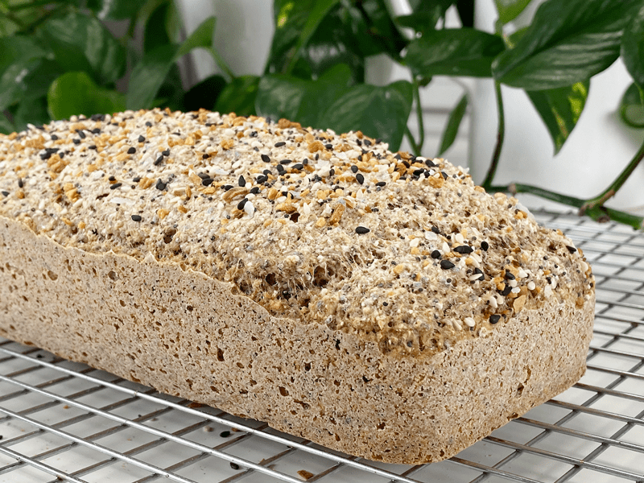
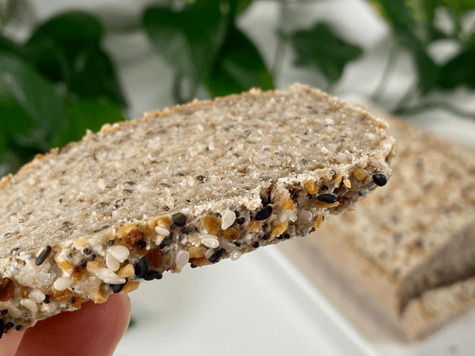
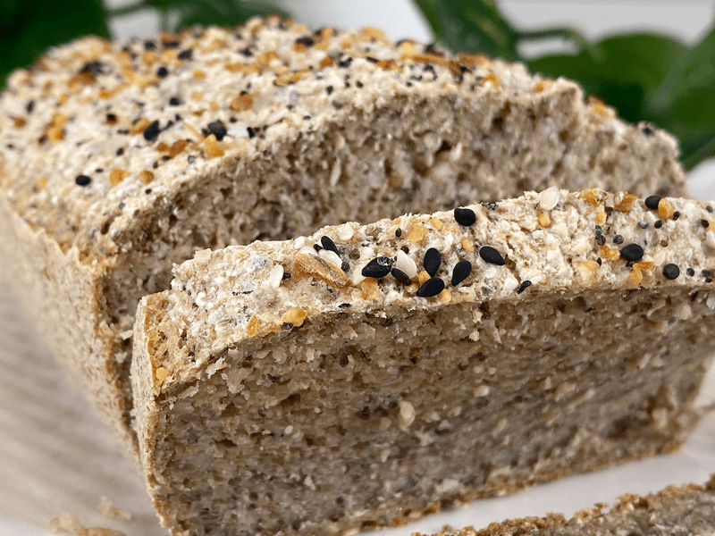
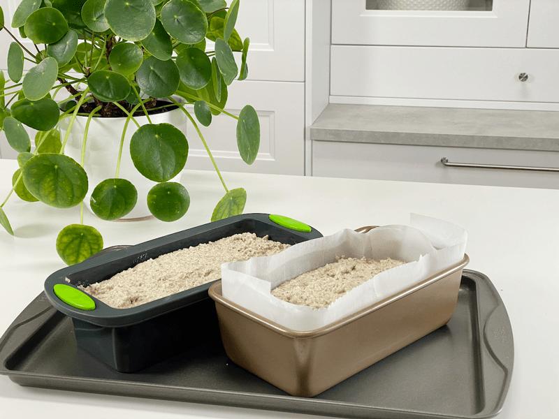
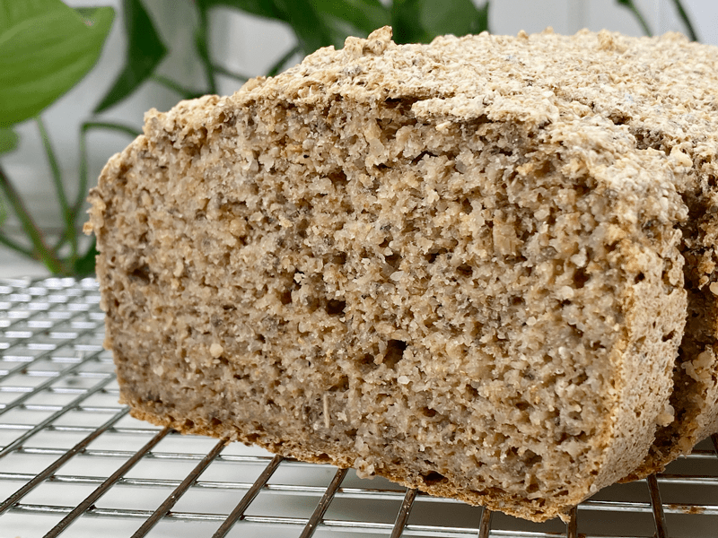
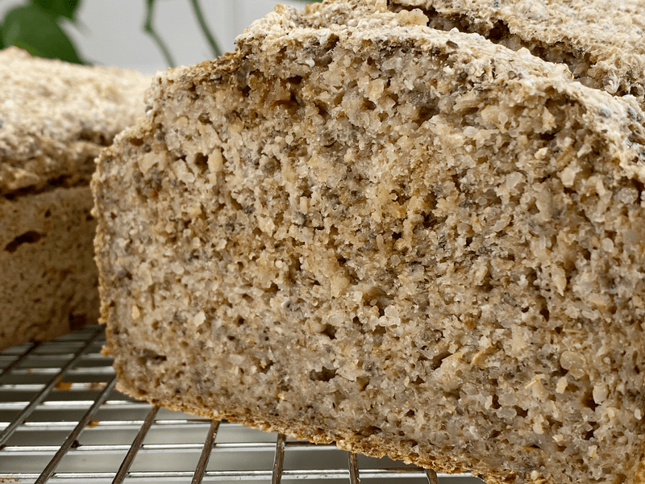

Buckwheat and Oat Bread | Cooked | Gluten-Free | Oil-Free | Yeast-Free
When you embark on a whole food journey, it may feel like you have to give up all the simple pleasures of life…like bread. That is not the case; you just have to find bread recipes that fit your dietary needs. I’m always on the lookout for a bread recipe that tastes awesome, is filled with dense nutrients, and actually works like bread ought to — it is soft when fresh out the oven, doesn’t crumble, and toasts well.

I have made this bread many times over, each time testing new variations (I am a recipe voyager at heart, always exploring). Today, I am sharing with you our favorite ingredient combination. It’s filled with whole-grain goodness that is void of flour, gluten, yeast, nuts, eggs, oil, or sugar. This bread is more on the dense side but doesn’t feel gummy, nor does it sit heavy in the tummy. As it bakes, it forms a wonderful crust that surrounds a soft center. The bread doesn’t darken with baking; instead, it stays a lighter color. It has a fairly neutral, nutty flavor (thanks to the buckwheat) with a hint of Italian herbs.
Trust me, you will need to put on your “Will Power” superhero leotard because when the bread comes out of the oven, it’s very hard to resist eating half a loaf in one sitting. You have been warned! In fact, drink a full glass of water and eat a salad while the bread is baking so you won’t be ravenous! Again, you have been warned.

Ingredient Run-Down
Buckwheat
- Do not replace the whole buckwheat with buckwheat flour. The bread will become far too dense.
- When you go to the market you will find “raw” buckwheat (uncooked, pale tan color), kasha (cooked buckwheat, brown in color), whole groats, and broken groats. For this recipe, I am using raw WHOLE buckwheat groats.
- The buckwheat needs to be soaked for at least 30 minutes but can be soaked up to 4 hours if you have a timing issue. Not only does the soaking process reduce the uptake of phytic acid, but it also softens and causes the buckwheat to swell, giving the batter exactly what we need for the expected outcome.
- The nutritional benefits of buckwheat are plentiful! It is high in magnesium, Vitamin B6, fiber, potassium, and iron. It is also a good source of copper, zinc, and manganese. Another good note is that the glycemic index is low, avoiding a spike in blood sugar.
- I don’t know about you, but I love learning where and how my food grows. If this is you, click (here) to learn more.
Gluten-Free Rolled Oats
- Just like the buckwheat, you will be using oats more in their whole form, rather than oat flour.
- I tried soaking the oats along with the buckwheat but it resulted in a REALLY dense bread. If you wish to soak the oats to reduce the phytic acids and enzyme inhibitors, I recommend soaking it and dehydrating it before adding it to this recipe.
Chia Seeds
- Chia seeds are added as the primary binder in this bread. They are used in place of eggs.
- Typically when flax or chia seeds are used as egg replacers, they are mixed with a little water before adding to the batter. For this bread recipe, it isn’t necessary because the chia seeds will activate once blended with all the other ingredients (including the water).
- Chia seeds don’t need to be ground to a powder (unlike flax seeds).
Psyllium Husks
- Psyllium husks are added to give the bread the spongy texture that most of us are used to when it comes to commercially made bread. It’s one of the greatest characteristics of bread!
- Psyllium comes in powder or husk form. You will want to make sure you use what the recipe recommends.
- Psyllium powder equals one-third the whole husks. So for instance, 1/3 cup psyllium powder = 1 cup psyllium husks. So as you can see, the volume is quite different based on the form of psyllium that you use. They are not interchangeable. For this recipe, I used the husks.
- Psyllium seed husks are one of nature’s most absorbent fibers– they can absorb over ten times their weight in water.
- As psyllium thickens when liquid is added, it is known to help get things moving in the digestion area. So, If you are eating recipes that contain these husks, please be sure to drink plenty of water throughout the day.
- For a bit more information about psyllium husks, click (here).
Baking Soda and Powder
- Be sure to use a reputable brand such as Bob’s Red Mill or Frontier. Arm & Hammer (and other similar brands) use a chemical process that turns trona ore into soda ash and then reacts carbon dioxide with the soda ash to produce baking soda. Bob’s Red Mill and Frontier procure their sodium bicarbonate directly from the ground, in its natural state.
- Look for a brand that is aluminum-free.
Recipe Update 07/18/2020 – One of our members tried making this recipe. She left a comment down below explaining that the bottom half of the bread didn’t quite cook through. She used smaller metal pans compared to my larger silicone pan. We tried a little troubleshooting and I decided to test the recipe myself using a metal pan. Unfortunately, I don’t have a metal bread pan that is the same size as my silicone pan. It wasn’t too far off in size so I felt comfortable in making a loaf in both pans side by side. The end result… I had way better results in the silicone pan. I had to bake the metal pan loaf 15 minutes longer and it still came out denser (it was cooked all the way through, just denser). So, I highly recommend a silicone bread pan if at all possible. I attached photos of my experiment down below.
 Ingredients
Ingredients
Yields 1 (3 3/4″ x 8 3/4″) pan – roughly 12 slices
- 1 cup raw whole buckwheat kernels
- 1 1/2 cups gluten-free rolled oats
- 1/4 cup chia seeds
- 1/4 cup whole psyllium husks (not powder)
- 2 tsp Italian seasoning
- 1/4 cup unsweetened applesauce
- 1 1/2 cups water
- 1 tsp sea salt
- 1 tsp aluminum-free baking powder
- 1/2 tsp baking soda
- Topping – Everything Bagel seasoning
Preparation
Soaking the Buckwheat
- Place the buckwheat in a glass or stainless steel bowl, and cover with double the amount of water.
- Add 2 Tbsp raw apple cider vinegar, stir, and cover with a clean dishtowel.
- Let it sit on the counter for 30 minutes to 4 hours.
- Once ready to use, drain and rinse before adding to the food processor.
Mixing and Baking
- Preheat oven to 350 degrees (F) and prepare your baking pan.
- I am baking the bread in silicone pans; therefore I don’t need any oil or parchment paper to line it. One tip when using silicone baking dishes is to place them on a baking pan before loading and transporting them to the oven. Since they are soft and flexible, they can be challenging to handle once full.
- If you use any other type of pan, I recommend lining with parchment paper so the bread doesn’t stick.
- Add the rolled oats, chia seeds, psyllium husks (not powder), Italian seasoning, applesauce, water, and salt to the food processor (along with the buckwheat). Process for a full 30-60 seconds.
- Add the baking powder and baking soda, process 10 seconds, and immediately pour into the pan and bake for 1 hour.
- Once done baking, remove the pan and dump the bread onto a cooling rack. Do not keep it in the pan, or it can become soggy.
- Cut once cooled and enjoy!
Storage
- Once cooled, you can store it in an airtight container on the counter for a few days, or in the fridge for around 5 days.
- It also freezes fantastically well and toasts up beautifully. Slice it before freezing and pull out individual pieces as you need for an easy, nourishing breakfast or lunch.
-

-
Fresh out of the oven.
-

-
Flip the bread over and remove it from the pan right away to prevent soggy-bottom.
-

-
Once cooled, slice and enjoy!
-

-
You know me and my close-ups. I want you to see exactly what this bread looks like.
Metal versus Silicone Pan Experiment
Recipe Update 07/18/2020 – One of our members tried making this recipe. She left a comment down below explaining that the bottom half of the bread didn’t quite cook through. She used smaller metal pans compared to my larger silicone pan. We tried a little troubleshooting and I decided to test the recipe myself using a metal pan.
Unfortunately, I don’t have a metal bread pan that is the same size as my silicone pan. It wasn’t too far off in size so I felt comfortable in making a loaf in both pans side by side. The end result… I had way better results in the silicone pan. I had to bake the metal pan loaf 15 minutes longer and it still came out denser from the center of the loaf down (it was cooked all the way through, just denser). So, I highly recommend a silicone bread pan if at all possible.

-

-
This loaf was baked in a silicone pan. We are not judging the height difference of the loaves since they were baked in slightly different sized pans. We are purely addressing the texture.
-

-
This loaf was baked in a metal pan. It might be hard to see but it’s denser from the center of the loaf to the base. Even though it cooked through it felt a tiny bit gummy. It will still be great for toasting.
© AmieSue.com